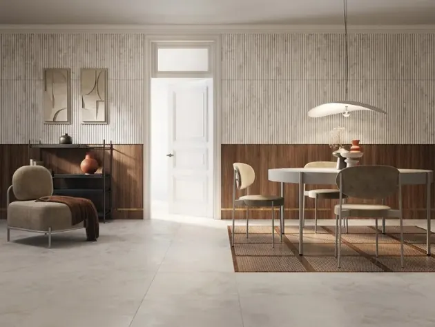

Bemutatkozik a CADENCE

Modernizmus egy új dimenzióban. Elég nehéz képesség egyensúlyt tartani a múlt, jelen és jövő között, de mégis ezt kínálja a Cadence kollekció. Bepillantást nyerhetünk a térek kortárs értelmezésébe, ahol a dekoráció funkcionálissá válik, és a forma finom, modern kifejezést kap.
Fedezze fel a Tubadzin 33x90 cm-es Cadence kollekcióját, melynek szépsége az egyszerűségében rejlik. A család megjelenésében a minimalista formák összefonódnak a megfontolt eleganciával.
A termékcsalád elemei:
Cadence stone 32,8x89,8 Cadence stone roll str. 32,8x89,8 Cadence wood 32,8x89,8 Cadence stone 59,8x59,8 padlólap Cadence pattern 59,8x59,8 padlólap